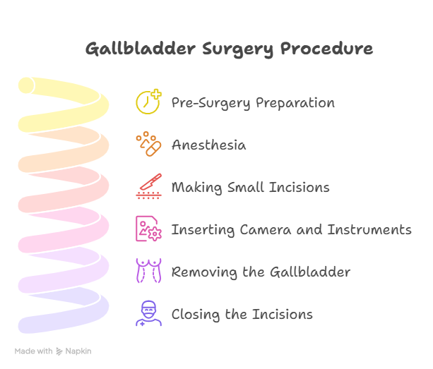
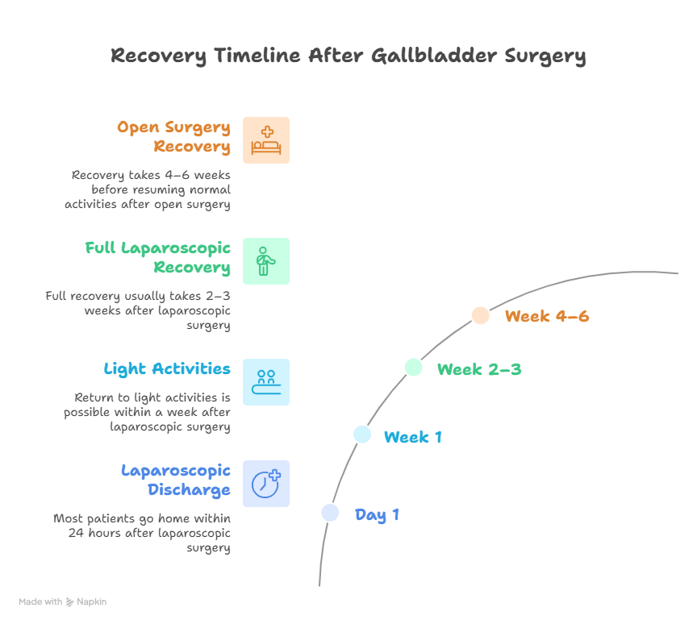

Gallbladder surgery, also known as cholecystectomy, is one of the most common surgical procedures performed worldwide. It is usually recommended for people suffering from gallstones, gallbladder inflammation, or other related problems that cause pain, nausea, or digestive issues.
If you’re planning for this surgery, you might want to know how is gallbladder surgery done and what to expect before, during, and after the procedure. This guide explains everything in simple terms, including the types of surgery, the step-by-step process, recovery, and safety aspects. We’ll also address common questions like how laparoscopy is done for gallbladder surgery and can gallbladder surgery can be done with local anesthesia, to help you make an informed decision.
Expert Gallbladder Surgery by Dr. Atul Peters
Minimally invasive surgery with smaller cuts, less pain, and faster recovery. Speak to our team now.
Understanding Gallbladder Surgery
The gallbladder is a small organ located under your liver that stores bile, a digestive fluid that helps break down fats. Sometimes, small stones (gallstones) form inside the gallbladder, causing severe pain, infection, or blockage in the bile duct. When medicines and lifestyle changes don’t help, doctors recommend gallbladder removal surgery to provide permanent relief.
The two main types of gallbladder surgery are:
- Laparoscopic Gallbladder Surgery: A minimally invasive procedure where small cuts are made in the abdomen, and a camera is used to guide the surgery.
- Open Gallbladder Surgery: A traditional method involving a larger incision, usually done in complicated cases.
Most patients today undergo laparoscopic surgery because it is safer, faster, and requires less recovery time.
How is Gallbladder Surgery Done?

Gallbladder surgery can be performed in two ways, but the laparoscopic method is the most preferred choice due to its minimally invasive approach. Here’s how the surgery is done step by step:
Step 1: Pre-Surgery Preparation
- A full medical evaluation is done, including blood tests, ultrasound scans, and sometimes an MRI.
- You will be given instructions on fasting (usually 6–8 hours before surgery).
- The anesthesia team discusses the procedure and gives you medication to help you relax.
Step 2: Anesthesia
- General anesthesia is given in most cases to ensure you are asleep and pain-free during the operation.
- Many people ask, “Can gallbladder surgery be done with local anesthesia?” While local anesthesia numbs a specific area, it is rarely used for this surgery because the procedure involves internal organs, and general anesthesia is much safer and more comfortable.
Step 3: Making Small Incisions
- In laparoscopic surgery, the surgeon makes 3–4 small cuts in your abdomen.
- A special tube is inserted to pump carbon dioxide gas, which inflates the area and provides space to work safely.
Step 4: Inserting the Camera and Instruments
- A thin tube with a camera (laparoscope) is inserted to give the surgeon a clear view of your gallbladder on a monitor.
- Special instruments are used to carefully separate the gallbladder from the liver and bile ducts.
Step 5: Removing the Gallbladder
- The gallbladder is detached and removed through one of the small incisions.
- The area is checked for bleeding, and the instruments are removed.
Step 6: Closing the Incisions
- The small cuts are stitched or sealed with surgical tape.
- A bandage is applied, and you are taken to the recovery room.
The entire laparoscopic procedure usually takes 1 to 2 hours, depending on the complexity of the case. Patients under the care of experts like Dr. Atul Peter, a trusted specialist for Gallbladder Surgery in Delhi, experience high success rates and safe outcomes.
How Laparoscopy is Done for Gallbladder Surgery?
Laparoscopic gallbladder removal is a modern technique that has replaced traditional open surgery in most cases. Here’s how it works:
- Minimal Incisions: Only 3–4 small cuts instead of one large incision.
- Camera Assistance: A tiny camera allows the surgeon to see inside the abdomen.
- Special Tools: Thin surgical instruments remove the gallbladder safely.
- Less Pain and Scarring: Smaller cuts mean less discomfort and almost invisible scars.
- Quick Recovery: Most patients can go home the same day or the next day after surgery.
Anesthesia in Gallbladder Surgery
Many patients are concerned about anesthesia and ask whether gallbladder surgery can be done with local anesthesia. In almost all cases, general anesthesia is used because:
- It ensures you are unconscious and pain-free during the entire procedure.
- It allows doctors to work safely on internal organs.
- It reduces stress and movement during surgery.
Local anesthesia is not preferred as it only numbs a small area and cannot prevent discomfort during a complex procedure like this.
Recovery After Gallbladder Surgery

Recovery time depends on whether you had laparoscopic or open surgery:
- Laparoscopic Surgery: Most patients can go home within 24 hours and return to light activities within a week. Full recovery usually takes 2–3 weeks.
- Open Surgery: Recovery takes longer, usually 4–6 weeks before resuming normal activities.
After Surgery:
- You may have mild pain or discomfort for a few days, which can be managed with prescribed medication.
- A low-fat diet is recommended to avoid digestive discomfort until your body adjusts to the absence of the gallbladder.
- Regular follow-up visits are important to monitor healing.
Risks and Complications
Gallbladder surgery is generally very safe, especially in the hands of experienced specialists like Dr. Atul Peter. However, like any surgery, there can be some risks:
- Infection or bleeding at the incision site.
- Injury to nearby organs or bile ducts (rare).
- Temporary diarrhea or digestive changes.
- Reaction to anesthesia (uncommon).
These risks are minimized when surgery is performed in a well-equipped hospital by a skilled surgical team.
Final Thoughts
If you’re wondering how is gallbladder surgery done, the answer is that it’s a safe and well-practiced procedure that offers long-term relief from gallstones and related problems.
Most patients undergo laparoscopic gallbladder removal, which is minimally invasive, takes about 1–2 hours, and allows you to go home the same or the next day. General anesthesia is used for comfort and safety, and the procedure is performed by highly experienced doctors like Dr. Atul Peter, a leading specialist for Gallbladder Surgery in Delhi.
With the right surgeon and proper aftercare, gallbladder surgery is a simple, effective, and permanent solution to painful gallbladder issues.
Frequently Asked Questions
How long does gallbladder surgery take?
How is laparoscopy done for Gallbladder surgery?
Can Gallbladder surgery be done with local anesthesia?
How many days do I need to stay in the hospital?
How long does it take to fully recover?
Recommended Further Reading
Have Personal Health Questions?
Consult with Dr. Atul Peters and our expert multidisciplinary team at Max Smart Super Speciality Hospital, Saket, New Delhi.
Book Your Consultation